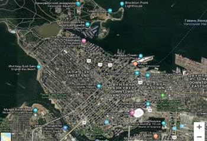
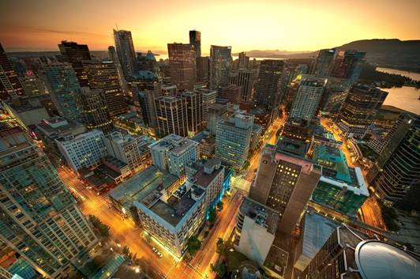
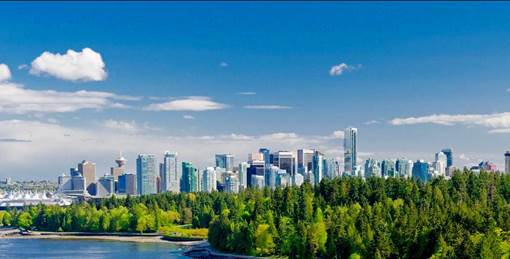
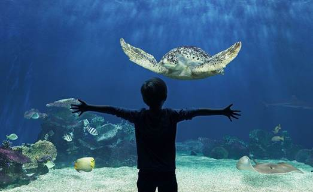

Путеводитель
1. Официальный сайт города Ванкувер
2. Дополнительные информационные ресурсы, посвященные городу
Гостиницы https://www.booking.com
Достопримечательности https://tonkosti.ru/
Мероприятия https://vancouverok.com/events
3. Общие сведения о городе
Карта города, вид со спутника. Ванкувер расположен на берегу Тихого океана и стоит в глубоководной гавани, которая образовалась благодаря заливу Баррард, напоминающей фьорд, в окружении Берегового хребта, вершины которого покрыты снегом. Ванкувер крупнейший населенный пункт провинции Британская Колумбия и третий по величине в Канаде. В 2010 году в Ванкувере проводились XXI зимние Олимпийские игры. Ванкувер является живописным городом мира и излюбленным местом режиссеров для съемок многих фильмов. Исследовательская группа Economist Intelligence Unit (EIU) британского издания The Economist трижды присваивала Ванкуверу звание «лучшего города Земли»
|
|
 |
4. Историческая справка
В 1792 году, капитан Джордж Ванкувер открыл пролив Буррард (Burrard) и описал здешнюю природу как “Безгранично радующие пейзажи”. Но, в первую очередь, – это было открытие запасов золота, что, привлело к значительному притоку европейских поселений в регион. В 1827 году, компанию The Hudson’s Bay Company создала торговую точку золотом на реке Фрейзер, к востоку от современного Ванкувера. К 1858, золотая лихорадка привлекла тысячи первопроходцев и наваторов на эту территорию. Развитие транспортной системы, на примере канадской Тихоокеанской железной дороги в 1880-х годах, значительно увеличили приток китайских рабочих из-за своей дешевизны. Ее строительство было одним из условий создания Конфедерации в 1871 году.
5. Фотогалерея




6. Достопримечательности города
|
 |
Стэнли парк – самая зеленая и яркая достопримечательность Ванкувера. Здесь найдется место и для любителей спокойного отдыха и семейных пикников, и для веселых молодежных компаний, и для художников, ищущих вдохновения. Парк представляет собой вечнозеленый полуостров площадью 1000 акров, расположенный недалеко от центра города. Заложили его в далеком 1886 году, название же было дано в честь генерал-губернатора Канады лорда Стэнли. Главная особенность Стэнли парка в том, что его оформляла не рука дизайнера, а сама природа. С апреля по сентябрь в парке открыт розарий с множеством разновидностей роз. Еще одним украшением служит огромный аквариум с белугами, китами и другими морскими обитателями. Также есть зоопарк и тропический террариум. На территории парка находится большое количество статуй, памятников и скульптур, в том числе поэту Р.Бернсу, президенту Хардингу и самому лорду Стэнли.
|
|
 |
The Vancouver Aquarium Marine Science Centre Ванкуверский Аквариум – это аквариум, открытый для публичного доступа и расположенный в Стэнли Парк, который также является центром морских исследований, сохранения и реабилитации морских животных. В настоящее время в аквариуме находится около 300 видов рыб, 30 000 беспозвоночных и 56 видов земноводных и пресмыкающихся. Также в наличии имеются около 60 видов млекопитающих и птиц. Именно в этом аквариуме впервые показали касатку широкой публике. Также, на территории аквариума находятся киты, дельфины и белуги. Также, на территории аквариума есть музей, где есть возможность прикоснуться к различным видам морских животных. |
|
|
|
Science word. Музей «Мир науки». Здание было построено в 1986, как один из павильонов выставки Экспо, которая проходила в том же году в Ванкувере. Вскоре из него сделали «Мир науки», который представляет собой мини-город, способный заинтересовать людей разных возрастных категорий. Всего в нем размещается 6 павильонов-галерей, каждый из которых посвящён определённой теме. В течение дня для посетителей проводятся различные образовательные программы, позволяющие узнать много интересного о технических и физических областях, играющих важную роль в нашей жизни. Музей “Мир Науки” – это воплощение восприятия современного мира и он определённо заслуживает вашего внимания.
|

|
|
Capilano Suspension Bridge. Подвесной мост Капилано Мост через бурлящую реку Капилано был сооружен в далеком 1889 году, его создателем стал шотландский инженер-строитель Грант Маккей. Материалом для моста послужили кедровые доски и конопляные веревки, которые в 1903 году убрали и поставили вместо них металлические тросы. Высота моста составляет 70 метров, а протяженность – 136 метров. С высоты, на которой подвешены мосты, открывается чудесный вид на зеленый вековой лес и белоснежные горные вершины.
|

7. Текст гимна города
|
O Canada!! Our home and native land! True patriot love in all of us command. With glowing hearts we see thee rise, The True North strong and free! From far and wide, O Canada, We stand on guard for thee. God keep our land glorious and free! O Canada, we stand on guard for thee. O Canada, we stand on guard for thee. |
О, Канада! Наш дом и родная земля! Сердца твоих потомков движимы любовью к тебе, С пылающими сердцами мы видим, как ты растёшь Истинной Северянкой, сильной и свободной! Отовсюду, о, Канада, Мы стоим на страже твоей. Да сохранит Бог нашу страну славной и свободной! О, Канада, мы стоим на страже твоей. О, Канада, мы стоим на страже твоей. |
8. Ссылки на видеоклипы и аудиокниги
Общие сведения: https://tonkosti.ru/Видео_о_Ванкувере
Достопримечательности: https://www.youtube.com/watch?v=zbTSldVDKuo